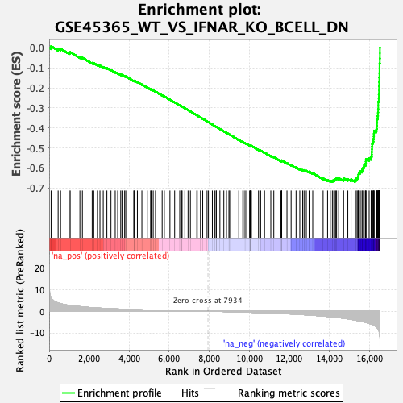
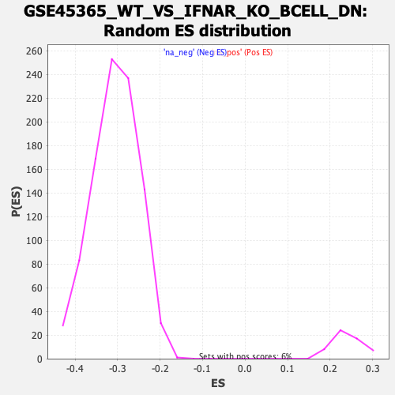

| | | Dataset | DE_genes2 |
| Phenotype | NoPhenotypeAvailable |
| Upregulated in class | na_neg |
| GeneSet | GSE45365_WT_VS_IFNAR_KO_BCELL_DN |
| Enrichment Score (ES) | -0.6692515 |
| Normalized Enrichment Score (NES) | -2.1930532 |
| Nominal p-value | 0.0 |
| FDR q-value | 0.0 |
| FWER p-Value | 0.0 |
Table: GSEA Results Summary

Fig 1: Enrichment plot: GSE45365_WT_VS_IFNAR_KO_BCELL_DN
Profile of the Running ES Score & Positions of GeneSet Members on the Rank Ordered List
| PROBE | GENE SYMBOL | GENE_TITLE | RANK IN GENE LIST | RANK METRIC SCORE | RUNNING ES | CORE ENRICHMENT | | 1 | VAT1 | | | 98 | 6.124 | 0.0077 | No |
| 2 | C10orf55 | | | 449 | 3.840 | -0.0050 | No |
| 3 | TST | | | 571 | 3.508 | -0.0046 | No |
| 4 | TIAM2 | | | 1000 | 2.732 | -0.0246 | No |
| 5 | IDO2 | | | 1051 | 2.664 | -0.0216 | No |
| 6 | CNNM2 | | | 1536 | 2.146 | -0.0464 | No |
| 7 | NIPSNAP1 | | | 1661 | 2.027 | -0.0494 | No |
| 8 | TMEM45A | | | 2150 | 1.650 | -0.0755 | No |
| 9 | LPCAT4 | | | 2228 | 1.600 | -0.0766 | No |
| 10 | TEKT4P2 | | | 2412 | 1.485 | -0.0844 | No |
| 11 | C1QTNF6 | | | 2538 | 1.422 | -0.0889 | No |
| 12 | FOXE1 | | | 2702 | 1.334 | -0.0959 | No |
| 13 | ID1 | | | 2845 | 1.266 | -0.1017 | No |
| 14 | MAFK | | | 2885 | 1.249 | -0.1013 | No |
| 15 | PTAFR | | | 3088 | 1.160 | -0.1110 | No |
| 16 | FLNB | | | 3301 | 1.075 | -0.1215 | No |
| 17 | BCL2L14 | | | 3425 | 1.029 | -0.1267 | No |
| 18 | PCDHGB7 | | | 3576 | 0.980 | -0.1337 | No |
| 19 | SMCO4 | | | 3640 | 0.954 | -0.1354 | No |
| 20 | PTPRU | | | 3772 | 0.905 | -0.1414 | No |
| 21 | PCDHGA10 | | | 3829 | 0.887 | -0.1428 | No |
| 22 | RIMS3 | | | 4233 | 0.767 | -0.1657 | No |
| 23 | CASC1 | | | 4240 | 0.765 | -0.1643 | No |
| 24 | SSPN | | | 4277 | 0.756 | -0.1648 | No |
| 25 | ALDOC | | | 4408 | 0.717 | -0.1712 | No |
| 26 | SCARF1 | | | 4633 | 0.654 | -0.1834 | No |
| 27 | SMG1P5 | | | 4902 | 0.594 | -0.1984 | No |
| 28 | SAXO2 | | | 5070 | 0.552 | -0.2073 | No |
| 29 | ADH1C | | | 5092 | 0.546 | -0.2074 | No |
| 30 | ENPP3 | | | 5199 | 0.520 | -0.2127 | No |
| 31 | TSSK3 | | | 5314 | 0.489 | -0.2186 | No |
| 32 | SERPING1 | | | 5646 | 0.417 | -0.2378 | No |
| 33 | LEPROT | | | 5743 | 0.395 | -0.2428 | No |
| 34 | APBB3 | | | 5751 | 0.394 | -0.2424 | No |
| 35 | SLC2A1 | | | 6035 | 0.339 | -0.2589 | No |
| 36 | CLEC7A | | | 6271 | 0.291 | -0.2726 | No |
| 37 | FGGY | | | 6524 | 0.239 | -0.2874 | No |
| 38 | LINC00884 | | | 6617 | 0.220 | -0.2925 | No |
| 39 | ABCG1 | | | 6643 | 0.216 | -0.2936 | No |
| 40 | SLC5A9 | | | 6779 | 0.189 | -0.3014 | No |
| 41 | ZNF608 | | | 6940 | 0.165 | -0.3108 | No |
| 42 | STMN1 | | | 7057 | 0.145 | -0.3175 | No |
| 43 | FBXO10 | | | 7377 | 0.084 | -0.3368 | No |
| 44 | OVGP1 | | | 7399 | 0.081 | -0.3379 | No |
| 45 | RALA | | | 7561 | 0.055 | -0.3476 | No |
| 46 | GUSBP11 | | | 7673 | 0.037 | -0.3543 | No |
| 47 | LINC00865 | | | 7889 | 0.006 | -0.3674 | No |
| 48 | SNORA68 | | | 7958 | -0.004 | -0.3716 | No |
| 49 | SOX7 | | | 8154 | -0.034 | -0.3834 | No |
| 50 | TMEM200A | | | 8270 | -0.051 | -0.3903 | No |
| 51 | PPP5D1 | | | 8346 | -0.065 | -0.3947 | No |
| 52 | DNER | | | 8349 | -0.065 | -0.3947 | No |
| 53 | SOSTDC1 | | | 8531 | -0.098 | -0.4055 | No |
| 54 | GLT8D1 | | | 8727 | -0.136 | -0.4171 | No |
| 55 | RCBTB2 | | | 8851 | -0.161 | -0.4243 | No |
| 56 | SEC11C | | | 8852 | -0.161 | -0.4239 | No |
| 57 | CSNK1A1P1 | | | 8982 | -0.189 | -0.4314 | No |
| 58 | MAMSTR | | | 9021 | -0.197 | -0.4332 | No |
| 59 | SPOCK3 | | | 9474 | -0.307 | -0.4601 | No |
| 60 | GNMT | | | 9675 | -0.362 | -0.4715 | No |
| 61 | PSME4 | | | 9698 | -0.368 | -0.4720 | No |
| 62 | SLITRK6 | | | 9787 | -0.397 | -0.4765 | No |
| 63 | RASAL2 | | | 9869 | -0.419 | -0.4805 | No |
| 64 | TRERF1 | | | 10013 | -0.464 | -0.4882 | No |
| 65 | IGFBPL1 | | | 10049 | -0.472 | -0.4893 | No |
| 66 | WDR34 | | | 10053 | -0.475 | -0.4884 | No |
| 67 | RAB40A | | | 10063 | -0.477 | -0.4879 | No |
| 68 | SP8 | | | 10106 | -0.492 | -0.4894 | No |
| 69 | CYP24A1 | | | 10459 | -0.605 | -0.5095 | No |
| 70 | PDPR | | | 10527 | -0.635 | -0.5122 | No |
| 71 | UBL7-AS1 | | | 10567 | -0.650 | -0.5131 | No |
| 72 | E2F5 | | | 10761 | -0.711 | -0.5233 | No |
| 73 | EMC9 | | | 11075 | -0.833 | -0.5405 | No |
| 74 | EVI2A | | | 11135 | -0.855 | -0.5422 | No |
| 75 | HPD | | | 11224 | -0.892 | -0.5456 | No |
| 76 | ARHGAP42 | | | 11581 | -1.039 | -0.5650 | No |
| 77 | SLC16A14 | | | 11616 | -1.053 | -0.5647 | No |
| 78 | ARMC10 | | | 11619 | -1.054 | -0.5624 | No |
| 79 | SLC9B2 | | | 11882 | -1.170 | -0.5758 | No |
| 80 | YY2 | | | 12089 | -1.269 | -0.5855 | No |
| 81 | FGFR1OP | | | 12336 | -1.395 | -0.5974 | No |
| 82 | SLC35F3 | | | 12523 | -1.486 | -0.6055 | No |
| 83 | TBX3 | | | 12667 | -1.575 | -0.6107 | No |
| 84 | PHACTR3 | | | 12736 | -1.607 | -0.6112 | No |
| 85 | MME | | | 12848 | -1.686 | -0.6142 | No |
| 86 | DPY19L1P1 | | | 12987 | -1.758 | -0.6187 | No |
| 87 | CORO1C | | | 13169 | -1.871 | -0.6255 | No |
| 88 | COQ3 | | | 13688 | -2.234 | -0.6522 | No |
| 89 | FEN1 | | | 13911 | -2.426 | -0.6603 | No |
| 90 | ASF1B | | | 14048 | -2.550 | -0.6629 | No |
| 91 | AK5 | | | 14151 | -2.642 | -0.6632 | Yes |
| 92 | KIF20A | | | 14222 | -2.716 | -0.6614 | Yes |
| 93 | ESPL1 | | | 14262 | -2.749 | -0.6576 | Yes |
| 94 | SFXN2 | | | 14323 | -2.802 | -0.6550 | Yes |
| 95 | FAM83D | | | 14362 | -2.844 | -0.6509 | Yes |
| 96 | PTTG1 | | | 14464 | -2.952 | -0.6505 | Yes |
| 97 | UBE2T | | | 14697 | -3.240 | -0.6574 | Yes |
| 98 | AHI1 | | | 14704 | -3.247 | -0.6505 | Yes |
| 99 | KIF27 | | | 14923 | -3.541 | -0.6558 | Yes |
| 100 | SPC24 | | | 15084 | -3.765 | -0.6572 | Yes |
| 101 | RAD51 | | | 15283 | -4.088 | -0.6601 | Yes |
| 102 | SPAG5 | | | 15339 | -4.181 | -0.6541 | Yes |
| 103 | CDCA5 | | | 15393 | -4.273 | -0.6478 | Yes |
| 104 | RMI2 | | | 15440 | -4.370 | -0.6408 | Yes |
| 105 | MTFR2 | | | 15456 | -4.399 | -0.6318 | Yes |
| 106 | VRK1 | | | 15477 | -4.445 | -0.6231 | Yes |
| 107 | CIT | | | 15547 | -4.578 | -0.6171 | Yes |
| 108 | SLC30A1 | | | 15630 | -4.777 | -0.6114 | Yes |
| 109 | OIP5 | | | 15659 | -4.836 | -0.6022 | Yes |
| 110 | FOXM1 | | | 15710 | -4.931 | -0.5942 | Yes |
| 111 | BIRC5 | | | 15741 | -4.998 | -0.5849 | Yes |
| 112 | RIMKLB | | | 15809 | -5.155 | -0.5774 | Yes |
| 113 | TROAP | | | 15823 | -5.203 | -0.5666 | Yes |
| 114 | CCNB2 | | | 15832 | -5.225 | -0.5554 | Yes |
| 115 | PARPBP | | | 15988 | -5.636 | -0.5522 | Yes |
| 116 | KIF18B | | | 16087 | -5.923 | -0.5449 | Yes |
| 117 | CCNE2 | | | 16115 | -5.986 | -0.5331 | Yes |
| 118 | AURKB | | | 16120 | -6.007 | -0.5199 | Yes |
| 119 | CRNDE | | | 16128 | -6.044 | -0.5068 | Yes |
| 120 | SPC25 | | | 16131 | -6.050 | -0.4934 | Yes |
| 121 | BUB1 | | | 16142 | -6.084 | -0.4804 | Yes |
| 122 | DIAPH3 | | | 16163 | -6.183 | -0.4677 | Yes |
| 123 | HS2ST1 | | | 16201 | -6.322 | -0.4558 | Yes |
| 124 | RAD51AP1 | | | 16221 | -6.439 | -0.4426 | Yes |
| 125 | KIF4A | | | 16226 | -6.459 | -0.4284 | Yes |
| 126 | MIS18BP1 | | | 16234 | -6.494 | -0.4142 | Yes |
| 127 | ANLN | | | 16350 | -7.214 | -0.4051 | Yes |
| 128 | NUSAP1 | | | 16374 | -7.420 | -0.3899 | Yes |
| 129 | NUF2 | | | 16382 | -7.475 | -0.3736 | Yes |
| 130 | CDCA2 | | | 16385 | -7.530 | -0.3568 | Yes |
| 131 | KIF11 | | | 16409 | -7.860 | -0.3406 | Yes |
| 132 | NEIL3 | | | 16430 | -8.045 | -0.3238 | Yes |
| 133 | CENPA | | | 16438 | -8.139 | -0.3060 | Yes |
| 134 | DSEL | | | 16443 | -8.185 | -0.2879 | Yes |
| 135 | TTK | | | 16444 | -8.189 | -0.2696 | Yes |
| 136 | WDHD1 | | | 16469 | -8.658 | -0.2517 | Yes |
| 137 | DEPDC1B | | | 16474 | -8.791 | -0.2322 | Yes |
| 138 | DLGAP5 | | | 16482 | -9.145 | -0.2122 | Yes |
| 139 | MKI67 | | | 16483 | -9.193 | -0.1916 | Yes |
| 140 | POLQ | | | 16490 | -9.648 | -0.1703 | Yes |
| 141 | TOP2A | | | 16497 | -9.873 | -0.1486 | Yes |
| 142 | KIF14 | | | 16503 | -10.060 | -0.1264 | Yes |
| 143 | CENPF | | | 16507 | -10.688 | -0.1026 | Yes |
| 144 | CEP55 | | | 16508 | -10.710 | -0.0786 | Yes |
| 145 | DEPDC1 | | | 16522 | -11.603 | -0.0534 | Yes |
| 146 | CKAP2L | | | 16526 | -11.804 | -0.0272 | Yes |
| 147 | NDC80 | | | 16527 | -12.233 | 0.0002 | Yes |
Table: GSEA details [plain text format]

Fig 2: GSE45365_WT_VS_IFNAR_KO_BCELL_DN: Random ES distribution
Gene set null distribution of ES for GSE45365_WT_VS_IFNAR_KO_BCELL_DN